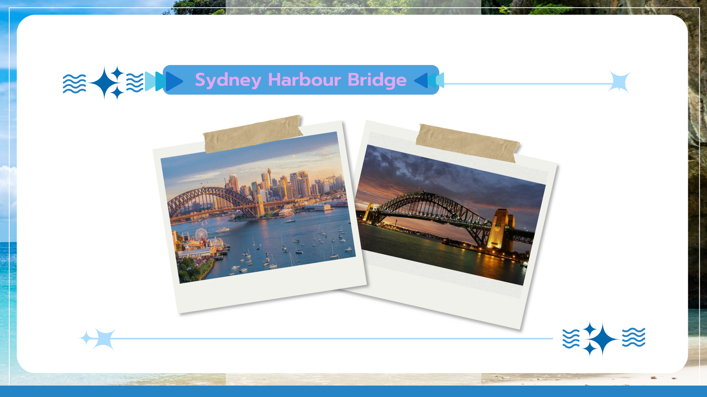

SYDNEY HARBOR BRIDGE
ออสเตรเลีย เชื่อมต่อพื้นที่ฝั่งเหนือและใต้ของอ่าวซิดนีย์เปิดใช้ปี 1932 เป็นที่รู้จักในฐานะสะพานโค้งเหล็กที่ใหญ่ที่สุดแห่งหนึ่งของโลก และเป็นที่นิยมในการทำกิจกรรมปีนสะพาน (BridgeClimb) เพื่อชมวิวทิวทัศน์อันงดงามของเมือง. สามารถเดินทางโดยรถไฟ (North Shore Line) ลงที่สถานี Circular Quay แล้วเดินต่อไปยังสะพานได้.
สะพานแห่งนี้เป็นส่วนหนึ่งของภาพจำของซิดนีย์ ควบคู่ไปกับ Sydney Opera House และเป็นจุดชมวิวที่นักท่องเที่ยวนิยมไปเยือนอย่างยิ่ง